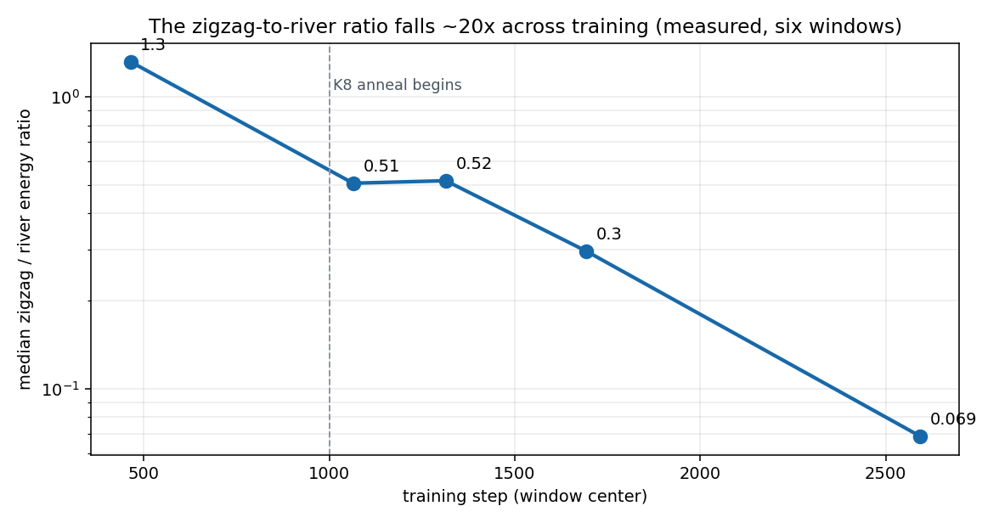
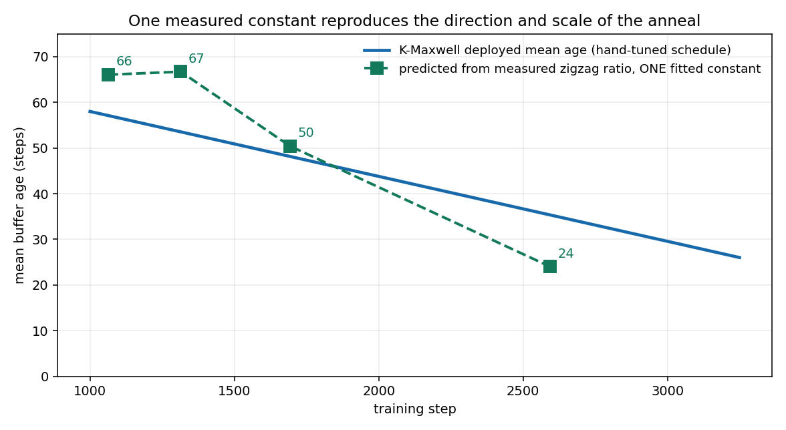
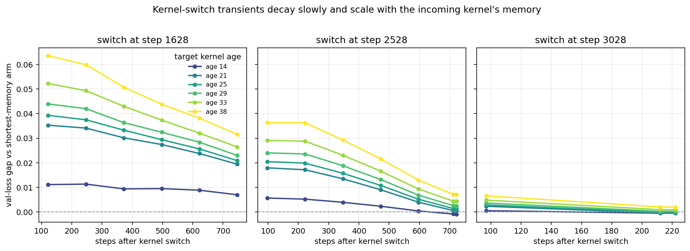

A momentum schedule from the measured zigzag
K8 shortens its memory as NanoGPT training proceeds. A rule that holds the transmitted period-two oscillation at one constant level reproduces the direction and scale of that hand-tuned schedule. The rule has one fitted constant; its remaining inputs are measured from the gradient trajectory.
Can the changing balance between period-two oscillation and slower gradient motion determine how much history momentum should retain?
Why the period-two oscillation is the starting point
Muon training contains a large period-two oscillation in the true gradient along high-curvature directions. It persists when minibatch noise is removed. Earlier interventions also found that eliminating the oscillation is harmful, so the design problem is to regulate how much reaches the update rather than cancel it.
K8, the current eight-buffer momentum kernel, was found by search. Its average lag falls during training. The proposed mechanism is simple: the raw oscillation becomes weaker relative to the slower gradient motion, and the kernel shortens its memory to keep their ratio in the update near a fixed target.

The ratio falls from 1.3 early in training to 0.069 late in training. This is the measured state variable that the rule uses. Training step enters only through the measurements.
A one-constant rule reproduces the anneal
A normalized exponential moving average with average lag $N$ transmits a persistent component at unit gain and reduces the amplitude of a period-two component by $1/(2N+1)$. Holding the transmitted energy ratio at a constant $ρ_*$ therefore gives
\[ \frac{E_{\mathrm{zig}}(t)}{(2N(t)+1)^2E_{\mathrm{river}}(t)}=\rho_*, \qquad N(t)=\frac{1}{2} \left(\sqrt{\frac{E_{\mathrm{zig}}(t)}{\rho_*E_{\mathrm{river}}(t)}}-1\right). \]The single fitted constant is $ρ_*=2.86 × 10^{-5}$, obtained by least squares in $\log N$ over the four annealing-phase windows. The resulting average lags are 66, 67, 50, and 24 steps. The deployed values at the corresponding phases are 57, 54, 48, and 35 steps.
The gradient recordings determine the input ratio $z(t)$. The constant $ρ_*$ specifies the preferred amount of zigzag remaining in the update, so it is a property of the optimization response rather than of the gradient field alone. Existing interventions bracket that preference: transmitting the oscillation without attenuation wastes progress, while cancelling it is catastrophic. Deriving its value requires a stability analysis that includes the third-order loss response. The present experiment tests the weaker claim that one constant suffices across training.

A measured closed-loop quantity can explain most of K8's annealing direction and scale with one constant. The candidate passes the standing screen because it regulates a measured optimizer response and makes a falsifiable schedule prediction; it does not estimate a rejected gradient target. This is evidence for zigzag regulation as a design principle. Empirical loss validation remains open.
The comparison has defined limits. The window before K8 begins is outside its scope because the deployed optimizer still uses a single exponential buffer. The final cooldown window is unusable because the denominator of z(t) is below the noise floor. The rule matches a ratio, so it cannot distinguish kernels that transmit both components at the same ratio but different absolute magnitudes.
Switching kernels creates a long-lived optimization shock
The continuation sweep was intended to rank candidate average lags at three saved states. It instead exposed a transient: after the optimizer inherits old momentum buffers and switches kernel weights, longer-memory kernels begin farther behind the shortest-memory comparison and close the gap for hundreds of steps.

The initial gap is about ten times smaller at the late saved state than at the early saved state. At the middle state, the 14-step kernel crosses the 7-step comparison only after roughly 600 steps. Endpoint ordering after a 750-step continuation therefore mixes steady-state quality with the cost of replacing the inherited kernel state.
This explains why the sweep cannot validate Figure 2. It also joins two earlier measurements of the same closed-loop problem: one-step selection ranked useful kernels backward, and an update can consume the future gradient component used to score it. Kernel changes must be evaluated from a state consistent with the candidate kernel.
The decisive test starts each kernel from its own state
The next experiment trains fixed-average-lag kernels from scratch, avoiding any kernel switch. It asks whether their loss ordering across training states follows the lag predicted by the zigzag rule.
| Design choice | Reason | Decision criterion |
|---|---|---|
| Fixed average lags spanning the predicted range | Separates kernel quality from a hand-tuned schedule | The preferred lag should shorten in the order predicted by Figure 2 |
| Training from initialization | Every momentum state is generated by the kernel being tested | No inherited-state transient can determine the ranking |
| Matched seeds and validation checkpoints | Compares kernels at the same data and training phase | Ordering must repeat across seeds before fitting a final rule |
Run the from-scratch fixed-lag comparison. If its preferred lags follow the mechanism-derived schedule, replace the hand-tuned K8 anneal with the one-constant rule and test that rule end to end. If the ordering does not follow the prediction, reject the rule rather than tune more constants into it.
Status, 2026-09-01 18:47 UTC: the fixed-lag comparison is running. It trains average lags of 10, 20, 30, 45, and 65 steps from initialization with two matched seeds each; every run uses the same single-exponential phase through step 1000 and its assigned fixed lag thereafter.
In parallel, the separately approved factored-curvature accumulation program continues. Its measurements do not enter the zigzag rule and do not change this test.